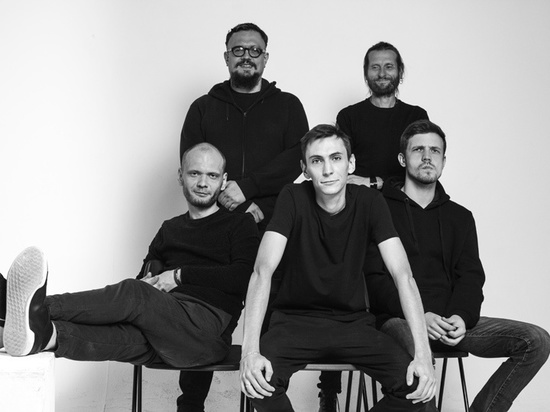
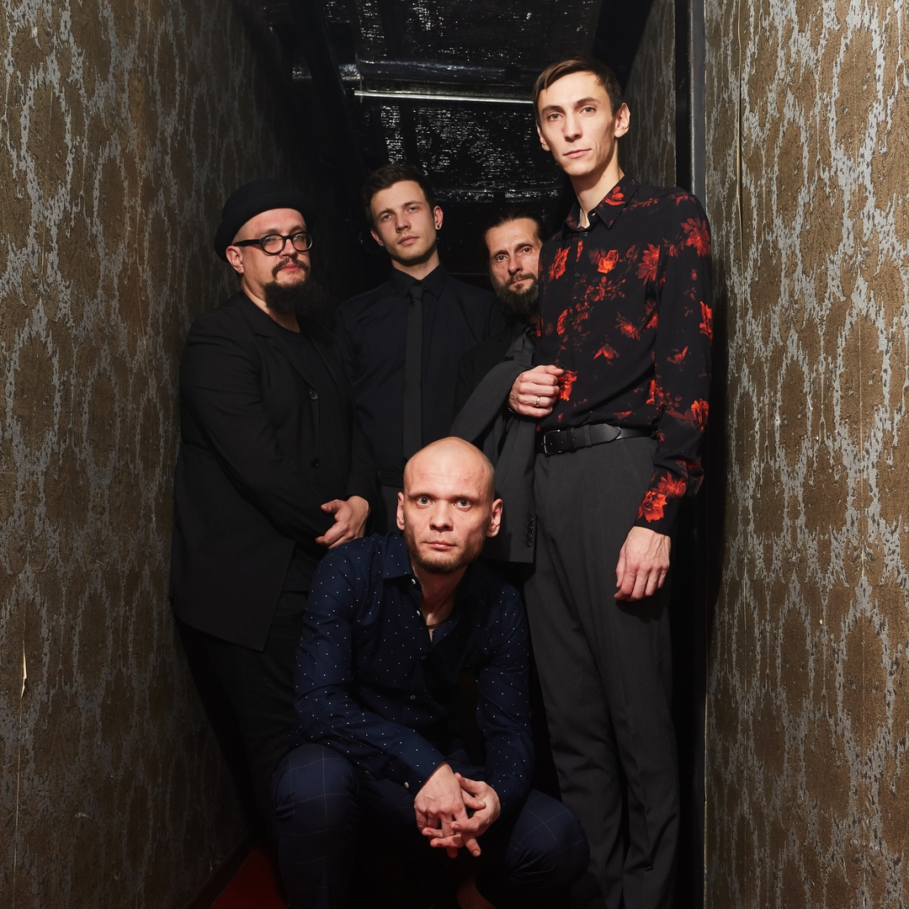

Дайте Танк (!)
«Гаражный рок для танцоров-интровертов, скучающих по русскому языку»


«Дайте танк (!)» — российская рок-группа из подмосковного города Коломна. Была основана Дмитрием Мозжухиным (гитара, баян, вокал) и Александром Романкиным (гитара, клавиши, труба) в 2007 году. На сегодняшний день коллектив состоит из пяти музыкантов.
До 2011-ого года группа носила название Give Us A Tank (!). Оно произошло от "giveusatank" – чит-кода из популярной видеоигры GTA 3, при вводе которого с неба падает танк.
Группа выступает в особом стиле - "робкий панк", что представляет собой смесь панк-рока, инди и электро музыки.
Всего группа выпустила 12 альбомов, 2 сингла и 1 мюзикл, над которым группа работала 5 лет. (Не считая множетсво композиций, которые записывали лидер группы Дмитрий Мозжухин и Александр Романкин в гараже на диктофон). Каждый год группа выступает с концертами: преимущественно в Москве и Санкт-Петербурге.